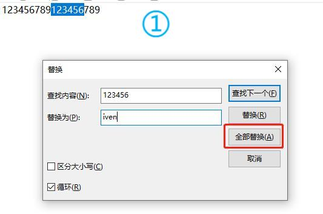
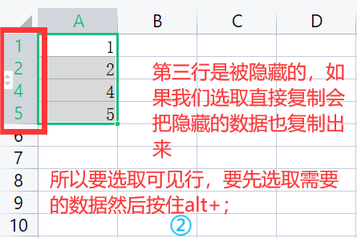
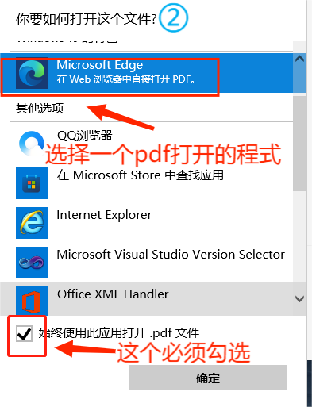

办公常用快捷键与技巧：
有下划线的可以点击跳转到对应说明
❤
新建文件：
「ctrl+n」
打印文件：
ctrl+p
保存文件：
ctrl+s
内容全选：
ctrl+a
内容拷贝：
ctrl+c
内容剪切：
ctrl+x
拷贝/剪切内容粘贴：
ctrl+v
查找：
ctrl+f
替换：
ctrl+h
撤消：
ctrl+z
excel中自动生成今天日期：
ctrl+；
小画家画直线：
按住shift拖动鼠标
选取可见储存格：
ALT+;或者F5
键盘方向键锁定：
FN+Scroll Lock
excel内容跳转到第一个单元格：
ctrl+home
excel内容跳转到最后一个单元格：
ctrl+end
pdf文件图标修改：
pdf打开方式的修改
xlt格式（模板excel格式）excel文档修改后保存：
一般需要另存为新的模板文件
间隔日期计算
9.替换
比如要把所有的123456替换为iven。
但是要注意被替换的值不影响到其他地方哦

13.选取可见储存格
可以在当前选定的区域中选中可见的储存格
方法一：alt+；

方法二：F5
17.pdf文件图标修改

18.xlt格式excel文档修改后保存